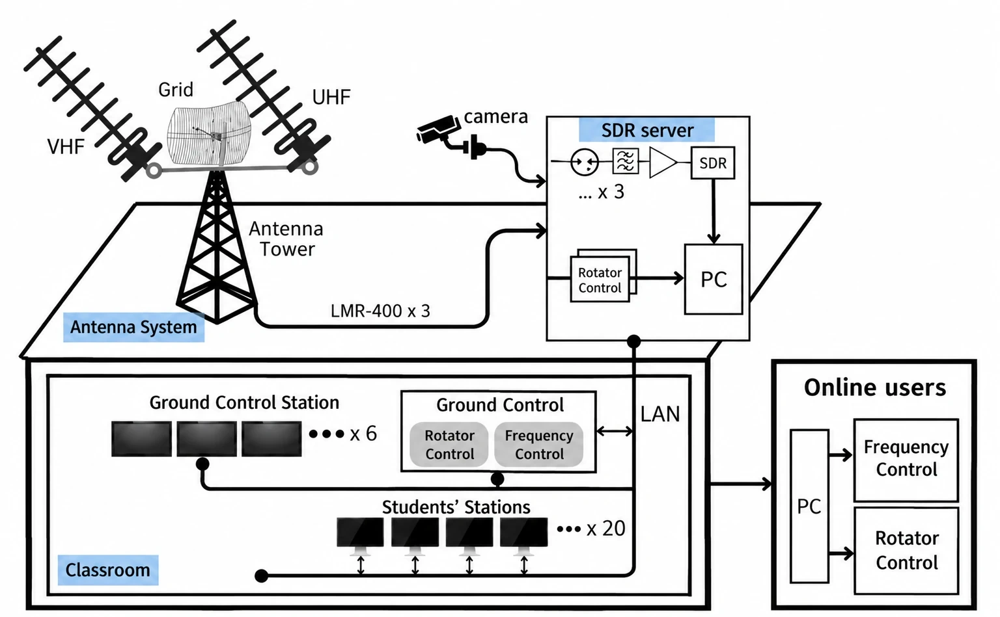

Overview
This project concerns practical ground-segment engineering, including receiving hardware, antennas, radios, and software tools used to monitor satellite transmissions.
Technical areas
- Antenna selection, RF link considerations, and ground-station hardware integration
- Satellite pass tracking, reception workflows, and packet interpretation
- System testing and performance characterization
Results & documentation
Insert verified system architecture, equipment lists, antenna photographs, reception plots, and demonstrable results. The current page is a project overview, not a validated performance report.